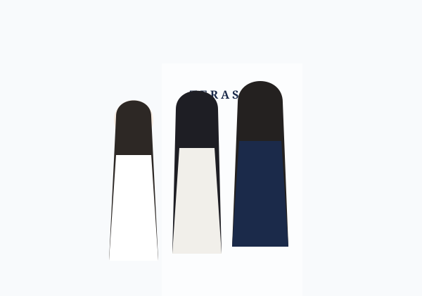
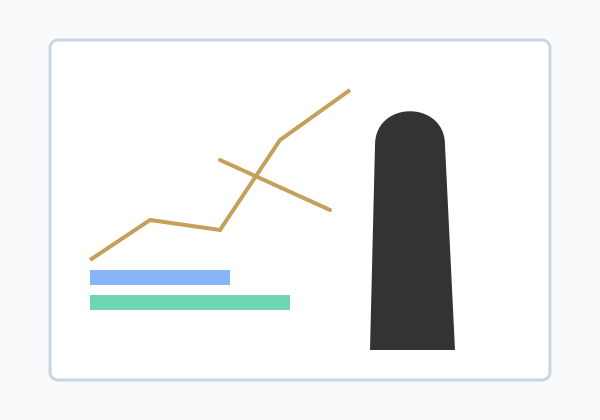
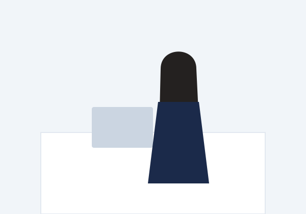
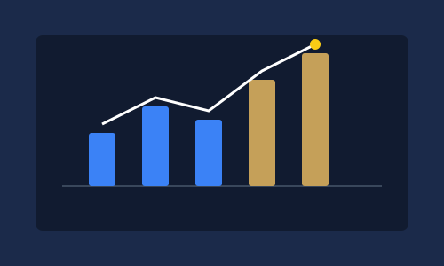
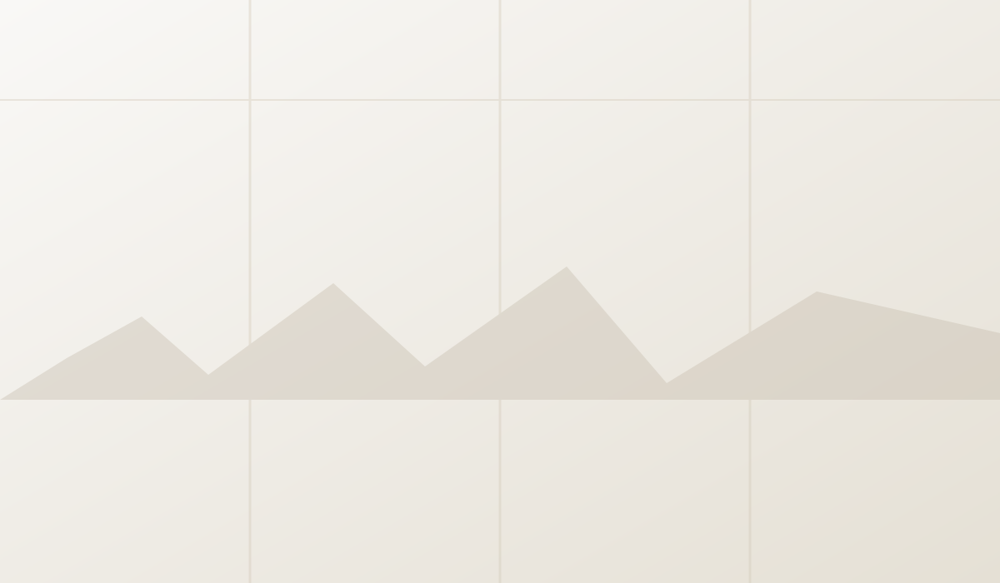
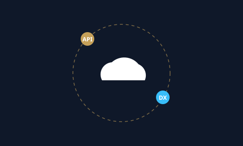

2026.10.29
寺沢恵子税理士事務所の公式Webサイトを開設いたしました
T E R A S A W A
TAX & CONSULTING
TAX & CONSULTING
数字を、経営の
最強の武器に。
税務調査のプロフェッショナル × 女性税理士
国税・税務署21年在職
法人課税部門 統括官歴任 ★★★★★
税務調査のプロフェッショナル
的確な事前対策と安心の折衝力
社会保険労務士と連携
ザワテラス社労士とワンストップ
ABOUT US
元国税統括官が率いる、頼れる税理士事務所
寺沢恵子税理士事務所は、熊本県天草市を拠点に全国の経営者様をサポートする女性税理士事務所です。
税務署21年在職・法人課税統括官の確かな経験と、社労士との強固な連携で、創業期から成長期まで一貫して経営に伴走します。

01
創業・企業支援に強い、
女性税理士の伴走体制
事業計画の策定から融資申込、法人設立届出まで。
「何から始めればいいか分からない」段階から、創業・経営の実務をワンストップで親身に担います。
02
税務署21年在職・法人課税統括官
税務調査のプロフェッショナル
国税の最前線で法人税調査を統括してきた圧倒的な専門知識。
税務署側の着眼点や指摘事項を熟知しているからこそ、適法かつ万全な事前対策と安心のサポートを提供します。

03
月次決算を「経営の武器」に
変える的確な管理会計
部門別の収益分析、資金繰り予測、適正な節税対策。
試算表を眺めるだけで終わらせず、次の意思決定に直結する数字の見方を経営者様と一緒に設計します。

04
社会保険労務士と連携
ザワテラス社労士とワンストップ
雇用・就業規則、助成金申請、社会保険手続き。
提携の「ザワテラス社労士」と密に連携し、税務と労務を一括対応。経営者が専門家を探し回る負担をゼロにします。

05
代表税理士 寺沢恵子が持つ
確かな突破力と親身な対話
「こんな質問をして怒られないだろうか」という不安は一切不要です。
女性税理士ならではの細やかな心配りと、豊富な国税キャリアに裏打ちされた頼もしい突破力でお応えします。
SERVICE
サービス



FLOW
ご契約までの流れ
1
お問い合わせ
まずはフォームまたはお電話（0969-22-1166）でお気軽にご連絡ください。初回相談は無料ですので安心してお話しください。
2
面談
WEBまたは事務所にてお悩みをお伺いします。難しい専門用語は使わず、お客様の状況に合わせた解決策を分かりやすく提案します。
3
お見積もり
サポート内容と料金を明確にしたお見積もりをご提示します。追加費用の不安がないよう、丁寧にご説明いたします。
4
契約
プランにご満足いただけましたら契約となります。二人三脚のパートナーとして、一番身近な相談相手となりサポートします。
COLUMN
コラム
2026.10.15
元国税統括官が教える「税務調査で慌てないための3つの鉄則」

2026.10.01
クラウド会計導入で経理工数を8割削減し、経営判断を加速させる方法
MESSAGE
代表挨拶
COMPANY
運営情報
寺沢恵子税理士事務所
| 所在地 |
〒863-0023 熊本県天草市南町5-22 |
|---|---|
| 電話番号 | 0969-22-1166 |
| FAX番号 | 0969-22-1167 |
| 代表者 | 税理士 寺沢 恵子（南九州税理士会熊本県連所属 / 税理士登録番号：第154978号） |
| 経歴 | 税務署21年在職 / 最終経歴業務：法人課税部門 統括官 |
| 連携士業 |
社会保険労務士と連携 👉 ザワテラス社労士（公式リンク） |
| 対応地域 | 熊本県全域（天草地域・熊本市等）、およびオンラインにて全国対応 |
Q&A
よくあるご質問
はい、もちろん可能です。税務署より調査通知が届いた段階での事前点検・想定問答の準備から、当日の立ち会い、調査官との意見調整まで、国税21年・統括官の知見を活かして全面的にバックアップいたします。
はい、当事務所は「ザワテラス社労士」と強固に提携しております。税務と労務の窓口を一本化し、雇用の助成金申請や就業規則作成までスムーズにワンストップで対応可能です。
はい、ZoomやGoogle Meet等のオンライン面談とクラウド会計データ共有を活用し、熊本市をはじめ全国の事業者様に対応しております。